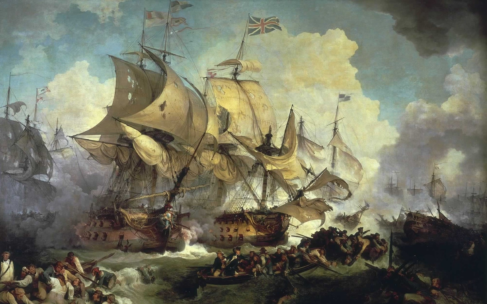
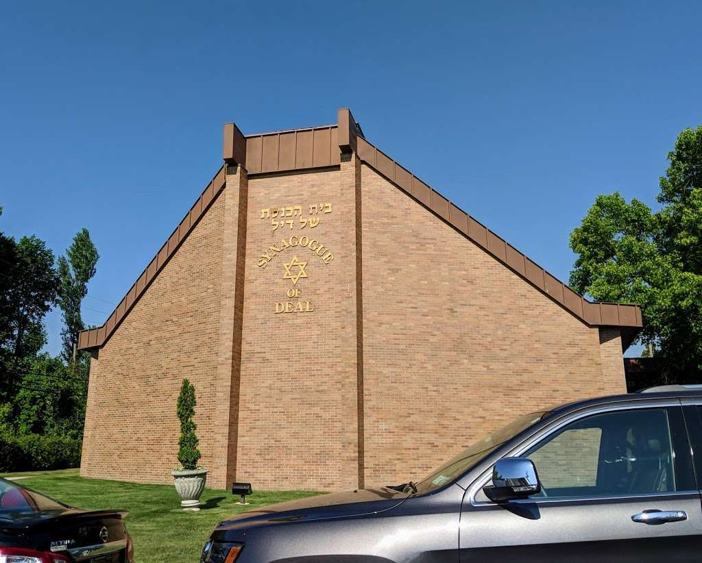
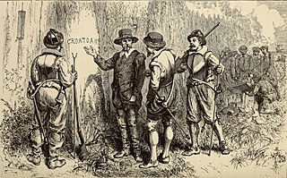

From today's featured articlePainting of the day of the battle, with HMS Namur in the center left. The naval Battle of Lagos took place between a British fleet commanded by Sir Edward Boscawen and a French fleet under Jean-François de La Clue-Sabranover 18–19 August 1759 during the Seven Years' War. The French Mediterranean Fleet successfully passed through the Strait of but was sighted by a British ship. The British fleet in Gibraltar, sail, triggering a race and effort to avoid great confusion, with many ships delayed and sailing in a second wave. After he was pursued, La Clue changed course, but half of his ships failed to follow him in the dark. The British caught the French south-west of the Gulf of Cádiz,Gulf of Cádiz, after fighting ensued, and three French ships were captured. The British pursued the remaining six French ships, some of which managed to escape. The four survivors attempted to shelter in neutral Portuguese waters near Lagos, but Boscawen ignored neutrality, capturing two of the ships and destroying the other two. (Full article...) Recently featured:
Did you Know ...Synagogue of Deal |
Ronnie O'Sullivan
On this dayAugust 18 - Long Tan Day in Australia (1966) |